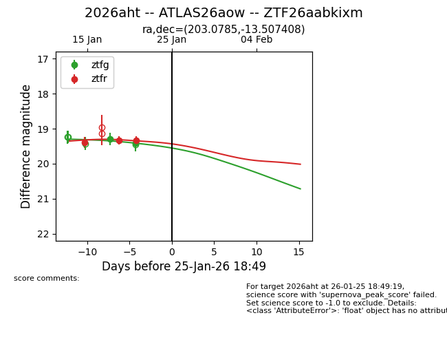
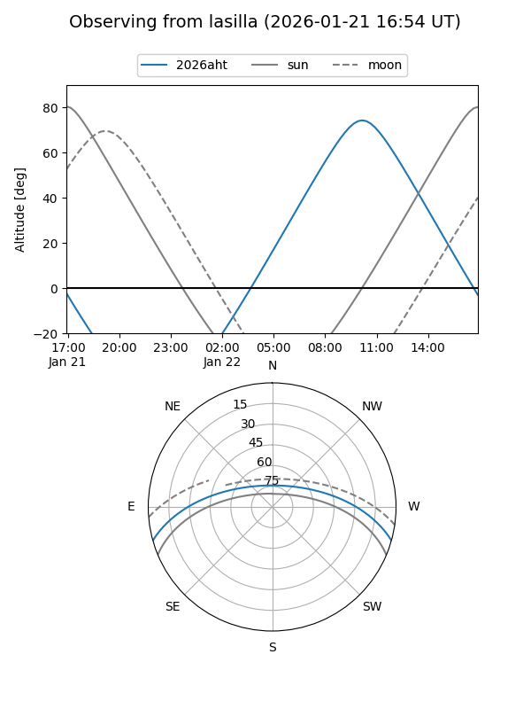
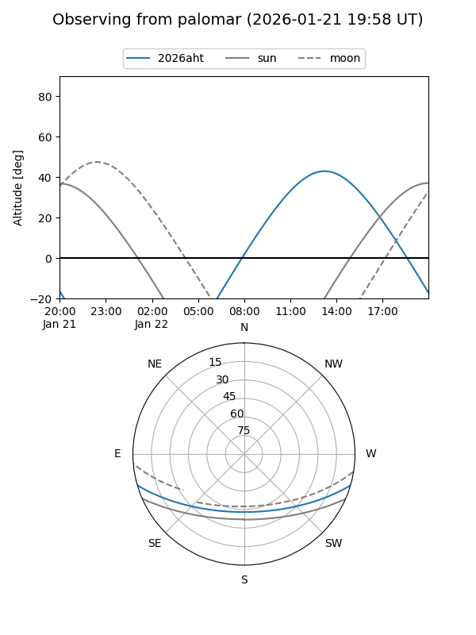
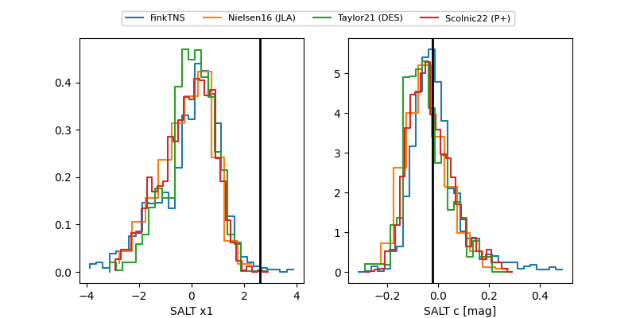

2026aht
Target 2026aht at 2026-01-29 01:51
Aliases and brokers:
FINK: link
Lasair: link
ALeRCE: link
TNS: link
YSE: link
alt names
ZTF26aabkixm (ztf,fink_ztf)
2026aht (tns,yse)
ATLAS26aow (atlas)
Coordinates:
equatorial (ra, dec) = 203.0785,-13.50741
equatorial (HMS+DMS) = 13:32:18.84,-13:30:26.67
galactic (l, b) = (317.9226,+48.17100)
Flags:
Photometry:
last ztfg=19.42, ztfr=19.33
2 ztfg, 3 ztfr detections
Lightcurve

Visibility


Additional plots
